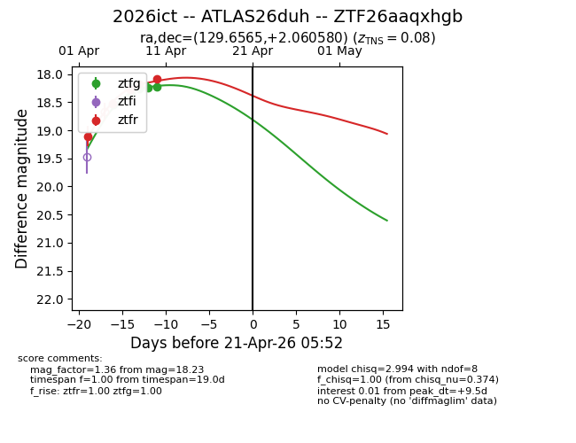
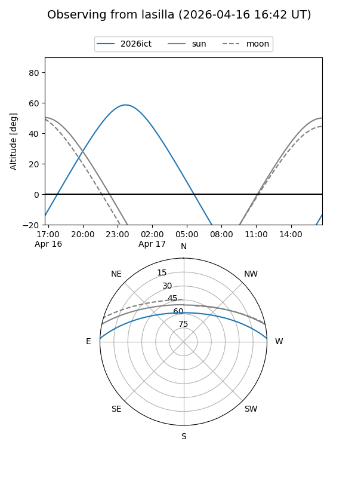
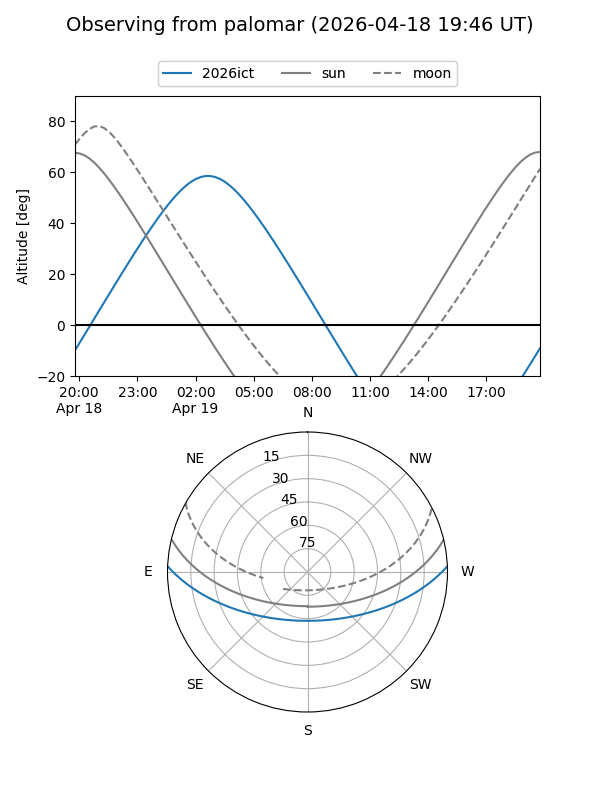
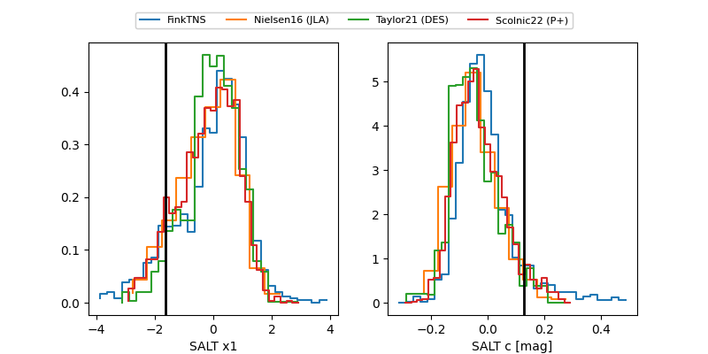

2026ict
Target 2026ict at 2026-04-21 05:56
Aliases and brokers:
FINK: link
Lasair: link
ALeRCE: link
TNS: link
YSE: link
alt names
ZTF26aaqxhgb (ztf,fink_ztf)
2026ict (tns,yse)
ATLAS26duh (atlas)
Coordinates:
equatorial (ra, dec) = 129.6565,+2.06058
equatorial (HMS+DMS) = 08:38:37.56,+02:03:38.09
galactic (l, b) = (223.9347,+24.66867)
Flags:
Photometry:
last ztfg=18.23, ztfr=18.09
5 ztfg, 5 ztfr detections
Lightcurve

Visibility


Additional plots
